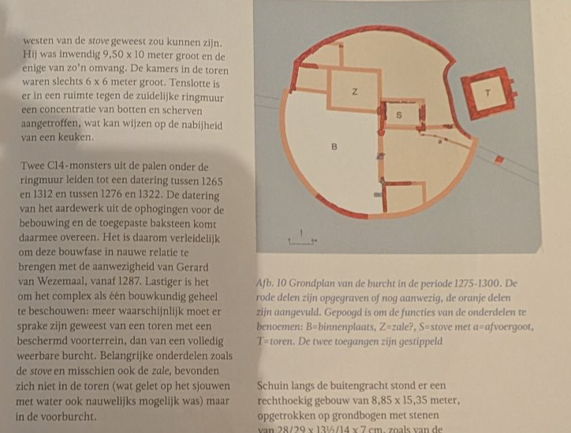
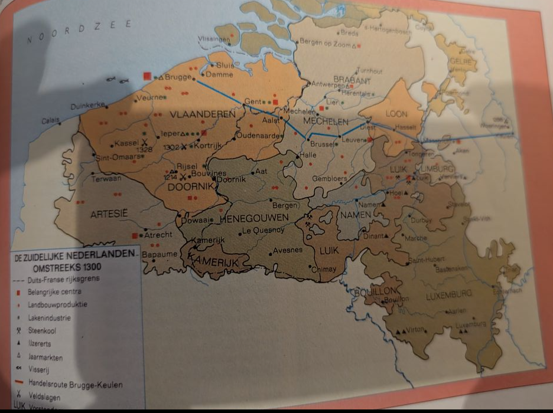

c14 monsters
https://nl.wikipedia.org/wiki/Gerard_van_Wesemale
 Willem van Ham
Hertog Jan I van Brabant besloot het noordwestelijke deel van Brabant te zijner tijd te verdelen over twee van zijn zusters, Aleida en Beatrix. Aleida, gehuwd met Raso van Liedekerke, kreeg het gebied dat later de Baronie ging heten. Beatrix, gehuwd met Arnoud van Wesemale, kreeg Bergen op Zoom, de heerlijkheid Wouw en de dorpen Woensdrecht en Ossendrecht. Beatrix en Arnout hadden één zoon, Gerard.
https://nl.wikipedia.org/w/index.php?title=Raso_van_Liedekerke&action=edit&redlink=1

De plaats komt als Wunsdrech op 29 april 1249 voor in een akte van de goederen en rechten der Sint-Michielsabdij te Antwerpen, die werd van bevestigd door paus Innocentius IV.